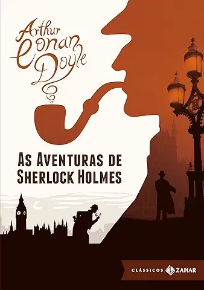

As aventuras de Sherlock Holmes
Arthur Conan Doyle
★
★
★
★
★
Sinopse
Sherlock Holmes é um detetive britânico enigmático e pedante do final do século XIX e início do século XX. Ele utiliza a metodologia científica e a lógica dedutiva para solucionar seus casos e conta com a ajuda de seu fiel amigo e parceiro dr. Watson. Observação, perspicácia e um pouco de intuição são alguns dos instrumentos usados por Sherlock Holmes para desvendar os seis curiosos casos reunidos nesta obra e narrados pelo atento doutor Watson.